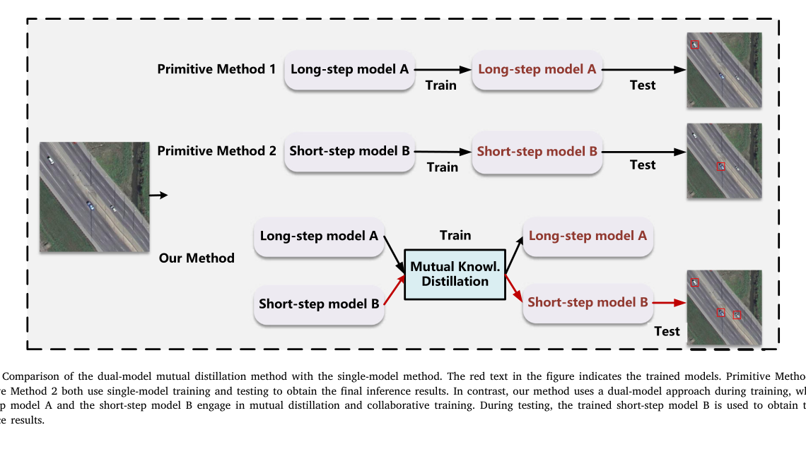
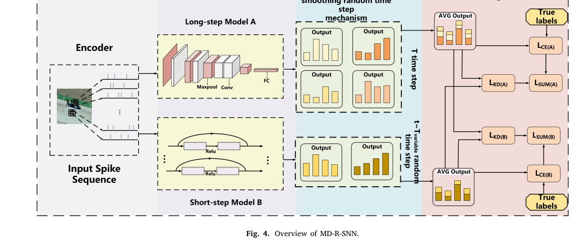
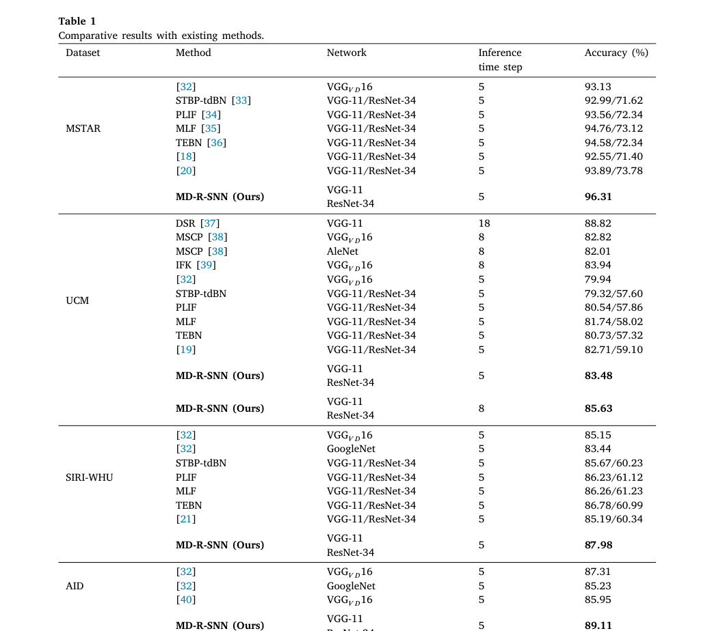

Paper brief
Dual-model spiking neural network for remote sensing image classification using mutual knowledge distillation
Neurocomputing, 651 · 130721
A long-short step dual-model mutual distillation framework reduces accuracy loss when SNN inference timesteps are shortened.
Research question
Remote sensing classification needs low power and real-time inference, but SNNs often require longer timesteps for sufficient information representation.
Method
The framework trains long-step and short-step SNNs collaboratively with mutual distillation, while a smooth random timestep mechanism gradually reduces the short-step model's timesteps.
Technical route
- Long-step SNN
Maintains richer temporal information.
- Short-step SNN
Targets low-latency inference.
- Mutual distillation
Shares knowledge and discriminative information during training.
- Smooth timestep
Gradually reduces short-model timesteps to avoid abrupt training loss.
Evidence
- Scene
- Remote sensing
Low-power image classification.
- Timesteps
- Long-short
Covers accuracy and latency needs.
- Accuracy loss
- ≈3% lower
Nearly 3% reduction compared with a single model under the same timestep.


Long-Short Time-Step Mutual Distillation
The framework illustrates bidirectional knowledge transfer between long-step and short-step SNN models.
The goal is to preserve discriminative knowledge while reducing inference time steps.
Source: Neurocomputing, 651, 130721 (2025). Figures from the author’s existing publication archive.
View full-size figure

Training Overview
The training diagram shows how the two models share supervision, feature constraints and prediction distributions.
The short-step model becomes an active co-learner instead of a passively compressed model.
Source: Neurocomputing, 651, 130721 (2025). Figures from the author’s existing publication archive.
View full-size figure

Remote-Sensing Classification Comparison
The table summarizes methods, architectures, time steps and accuracy across multiple remote-sensing datasets.
The important signal is accuracy retention under low-latency inference.
Source: Neurocomputing, 651, 130721 (2025). Figures from the author’s existing publication archive.
View full-size figureTakeaway & limitations
Low-latency SNNs should not be trained in isolation; short-step models can preserve information through knowledge transfer from long-step models.
Edge remote sensing requires energy, latency, and accuracy trade-offs. This training strategy maintains performance while reducing SNN timesteps.
- Uses mutual distillation so short-step SNNs learn stable representations from long-step models.
- Introduces smooth random timestep reduction.
- Evaluates on MSTAR, UCM, and SIRI-WHU.
A case study in low-latency SNN training: reduce timestep dependency through training design, not only architecture.
Citation
Zhen Cao, Ju Liu, Qi Sun, Biao Hou, Hao Zhu, Lei Guo, Yifan Ge, Yulong Wang, and Licheng Jiao. Dual-model spiking neural network for remote sensing image classification using mutual knowledge distillation. Neurocomputing, 2025, 130721.
Download BibTeX